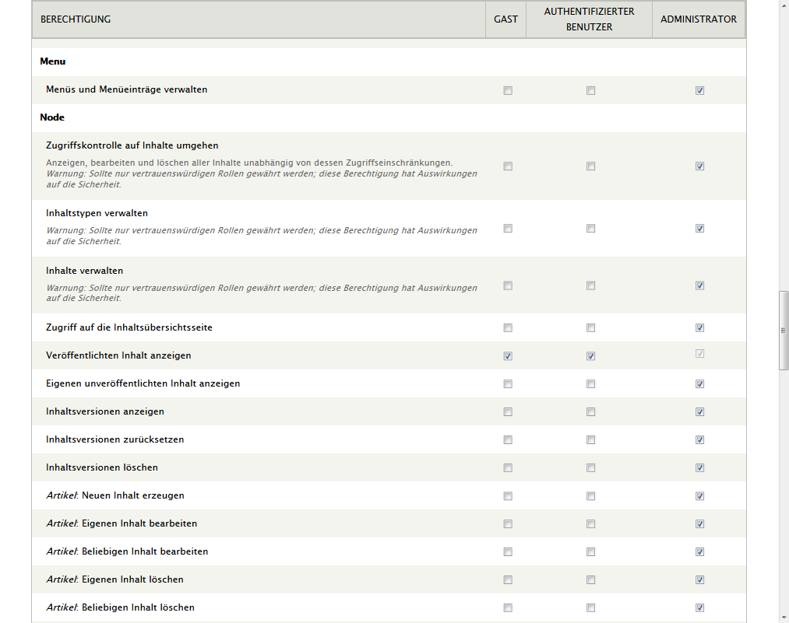

Drupal
07.02.2013

Stefan Wienert
- Webentwickler
- Drupal-Modulentwickler seit 2009
- Disclaimer: Seit 2011 vorrangig Ruby on Rails

- Version 1: 2001
- Seit 2007 brauchbar
Überblick
- XAMP: MySQL + PHP
- Datenbank: MySQL, Postgresql, Sqlite
- jQuery
-
Aktuell: Drupal 7 (nur < PHP 5.4)
8 in Vorbereitung
Verbreitung
- 20.311 Module
- 1.617 Themes
Corporate-Websites + Organizations
White House, Grammy + Emmy, Greenpeace, Playboy, Bands + Music labels, Nvidia, LucasFilm
Kernfeatures
- Allgemeiner statischer Content ("nodes"), leicht anpassbar
- → Blog, Page, Eintrag, Job, Rezensionen ...
Nutzerauthentifikation, Rollenbasierte Rechte
... Features
- ordentliches Menü/Navigationssystem
- Performance: CSS/JS minify, Caching (erweiterbar)
- I18n/l10n
- Kategorisierung
- Views: Filterung von Inhalten ohne SQL-Kenntnisse möglich
- SEO-Kram: lesbare URLs, sitemaps
Erweiterbarkeit
- extrem modular → selbst Kernfeatures sind nur Module,
- Module mit Dependency-Management
- recht gute Codequalität & Testsuite
- leicht hackbare Themes und Arbeitsabläufe (PHP)

Anwendungsfälle
Flexibilität: Blogs, Corporate Websites, eCommerce, micro social network, UmfragetoolAlles zwischen einem Blog und einer Web-App
Ideal für Freelancer dank Automatisierung
Nachteile
- Anfangs schwierig (Lernkurve)
- Usability → Pre-7 grausam, 7 immer noch überladen
- PHP (+/-)
- Teilweise altbacken (Wysiwyig-Editoren...)
- Ohne Caching auf Shared-Hoster sehr langsam
- kein automatisches Upgrade der Kernmodule
- Sprung zwischen Majorversionen (5, 6, 7, 8) #pain
Fazit
- Geduld + Ausdauer vorrausgesetzt
- enorm viele Module
- FOSS
- Positive Entwicklung
- 2013
- Mobile/Responsive
- Symfony2
- Webservices + REST
Drupal runs millions of web sites, including many of the world’s biggest. It’s especially strong among major governments and industry-leading enterprises, but is easy enough to be the platform of choice for individuals and small companies.
Off-Topic: Jekyll / Octopress
- statischer Blog mit Markdown
- generiert HTML
- Ruby (ohne Rails)
- http://www.stefanwienert.net
Merci
Follow @stefanwienert

260 Stellen und Praktika
ITmitte, MINTsax, OFFICEsax, OFFICEmitte, (ITbbb.de) → Empfehlungsbund